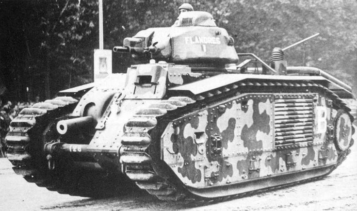
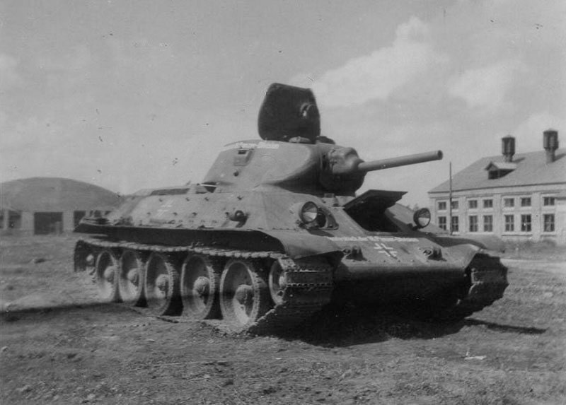
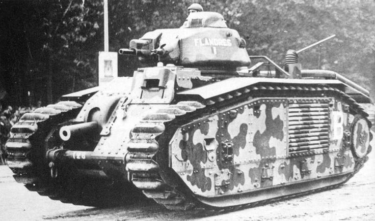
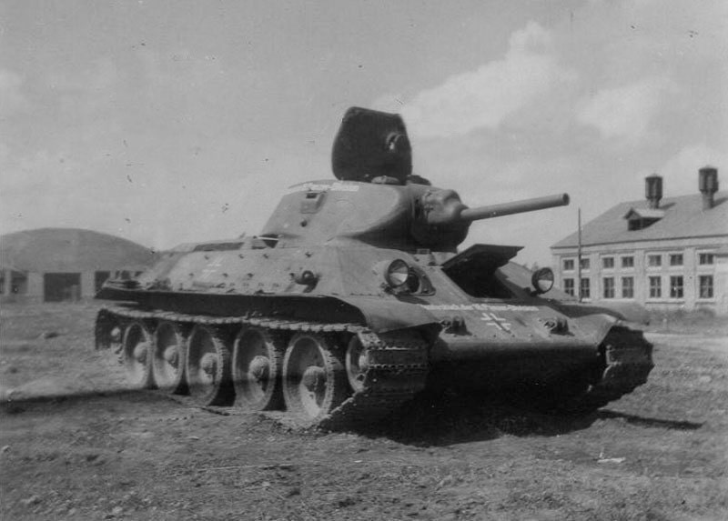
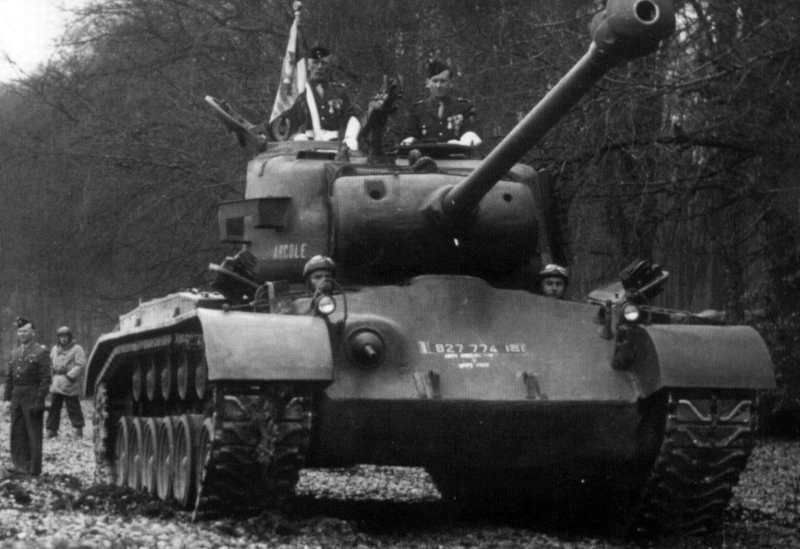
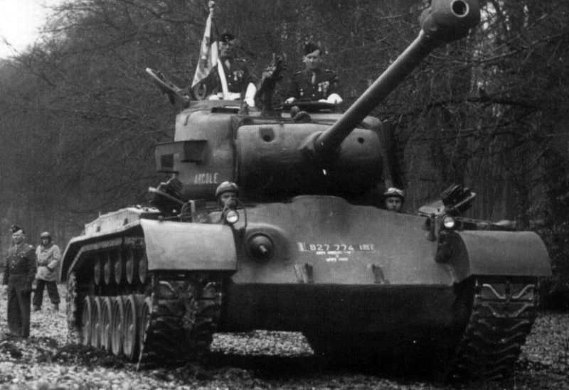

Хронология танкостроения
1930-е годы: Подготовка к войне
Перед войной танки были в основном лёгкими, с тонкой бронёй и слабыми пушками. Многие страны ещё не осознавали, насколько решающим станет это оружие.
СССР: Лёгкие и манёвренные танки серии БТ, созданные на основе американской подвески Christie, а также первый опытный тяжёлый танк Т-35.
Германия: Panzer I – лёгкий танк для обучения, но уже в конце 1930-х был запущен Panzer II, который стал основой танковых войск на начальном этапе войны.
Франция и Великобритания: Франция разрабатывала тяжёлые и хорошо бронированные машины, такие как Char B1, но их стратегическое использование оказалось слабым. Великобритания полагалась на танки поддержки пехоты (например, Matilda I).
1939–1941: Ранние годы войны
С началом войны в танковых армиях произошли радикальные изменения.
Польская кампания (1939): Германские Panzer I и II были слабо вооружены, но использовались в массированных атаках в сочетании с авиацией и пехотой – тактика блицкрига.
Франция (1940): Французские танки, такие как Char B1 и Renault R35, имели мощное вооружение, но из-за слабой координации не смогли противостоять немецким Panzer III и IV.
СССР: К началу войны в 1941 году Красная Армия имела огромное количество танков (например, Т-34 и КВ-1), но их использование было затруднено слабой организацией и внезапностью нападения.
 



1942–1944: Средний период войны
Этот период ознаменовался созданием наиболее известных и массовых моделей танков.
СССР: Т-34 стал символом советского танкостроения. Его наклонная броня, дизельный двигатель и высокая проходимость сделали его грозным противником. Тяжёлые танки серии КВ (КВ-1 и КВ-2), а затем ИС-2, предназначались для прорыва укреплений.
Германия: Panther (Пантера) – средний танк с мощной пушкой и отличной бронёй, создан для борьбы с Т-34. Tiger I – тяжёлый танк с мощной 88-мм пушкой, считавшийся почти неуязвимым в лобовых атаках.
Великобритания: Churchill – пехотный танк с мощной бронёй, использовался для поддержки атак.
1944–1945: Конец войны
В последние годы войны танкостроение достигло своего пика.
СССР: ИС-2 с 122-мм пушкой был предназначен для уничтожения немецких "Тигров".
Германия: Tiger II (Кёнигстигер) – тяжёлый танк с мощной бронёй и орудием, но его высокая стоимость и сложность производства ограничили количество. Прототипы, такие как Maus, были слишком громоздкими и непрактичными.
США: Разрабатывались новые модели, такие как M26 Pershing, но они не успели массово повлиять на ход войны. Великобритания: Новый Comet стал предшественником послевоенного Centurion.
 

Сравнение стран и моделей
Технологии и инновации
Наклонная броня: Первой её использовала Франция (Somua S35), но массовую популярность принесла Т-34. Дизельные двигатели: Т-34 получил надёжный и экономичный двигатель, увеличивающий запас хода. Радиосвязь: Немецкие танки Panzer III и IV массово оснащались радиопередатчиками, улучшая координацию.